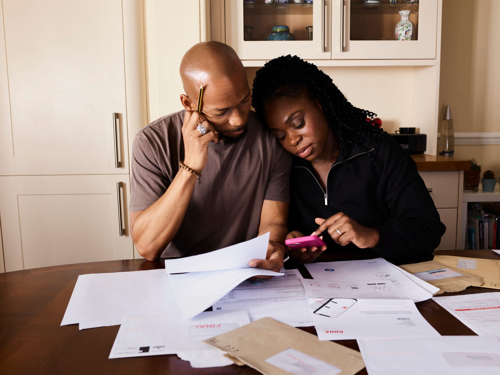

긴급복지 2026 기준표 — 소득 1인 192만 3,179원·생계비 1인 783,000원, 내 가구가 들어가는 선
발행일 2026-10-12

30초 요약
| 항목 | 2026년 기준 |
|---|---|
| 누가 | 실직·질병·휴폐업 등 갑작스러운 위기가 닥친 가구. 소득이 기준 중위소득 75% 이하면 됩니다 — 1인 월 192만 3,179원, 4인 487만 1,054원 이하 |
| 무엇을 | 생계지원은 정액입니다. 1인 783,000원부터 4인 1,994,600원까지, 월 단위로 최대 3개월(심의 연장 포함 총 6개월) |
| 재산 선 | 일반재산은 대도시 2억 4,100만 원·중소도시 1억 5,200만 원·농어촌 1억 3,000만 원 이하. 금융재산은 1인 856만 4,000원, 4인 1,249만 4,000원 이하 |
| 순서 | 129 전화·방문 신청 → 지원이 먼저 나가고 기준 충족 심사는 나중에(선지원 후조사). 거동이 어려우면 신고 접수도 가능 |
| 핵심 | 소득·재산 선을 넘었다고 미리 포기하지 마세요. 선지원 구조에서는 창구가 먼저 열리고 셈은 뒤입니다. 표에서 내 가구 칸만 확인하고 전화하세요 |
1. 누가 — 두 개의 선을 동시에 넘어야 합니다
긴급복지지원은 "갑자기 못 살게 된 사람"을 위한 단기 구제입니다. 다만 아무나 대상은 아니고, 2026년 기준은 소득과 재산 두 갈래로 그어져 있습니다. 소득은 기준 중위소득의 75% 이하입니다. 금액으로 환산하면 1인 가구 월 192만 3,179원, 2인 314만 9,469원, 3인 401만 9,277원, 4인 487만 1,054원, 5인 566만 7,539원, 6인 641만 6,964원이고, 7인 이상은 1인이 늘 때마다 719,399원씩 선이 올라갑니다.
여기서 헷갈리기 쉬운 숫자가 하나 있습니다. 같은 제도 안에서도 "기준 중위소득 40%"라는 표현이 다른 데 붙어 있어요. 75%는 문의 안에 들어오는 선(선정 기준)이고, 40%는 그 안에서도 너무 큰돈이 못 나오게 걸린 생계지원액의 상한입니다. 4인 가구 기준선 487만 1,054원과 상한선 259만 7,895원은 완전히 다른 물건이니, 표를 볼 때 줄 이름을 꼭 보세요.
재산 선도 별도로 있습니다. 대도시 2억 4,100만 원, 중소도시 1억 5,200만 원, 농어촌 1억 3,000만 원 이하에, 실제 사는 집은 별도 공제 한도(대도시 6,900만 원, 중소도시 4,200만 원, 농어촌 3,500만 원)를 빼고 셈합니다. 여기에 금융재산을 더한 총액으로 판정해요.
2. 내용을 금액으로 보면
생계지원은 소득에 비례해서 주는 방식이 아니라, 가구원 수로 금액이 고정되어 있습니다. 2026년 금액은 이렇습니다.
| 가구원 수 | 생계지원 월 금액 | 소득 기준(중위 75%) | 금융재산 기준 |
|---|---|---|---|
| 1인 | 783,000원 | 1,923,179원 | 8,564,000원 |
| 2인 | 1,286,600원 | 3,149,469원 | 10,199,000원 |
| 3인 | 1,644,000원 | 4,019,277원 | 11,359,000원 |
| 4인 | 1,994,600원 | 4,871,054원 | 12,494,000원 |
| 5인 | 2,324,400원 | 5,667,539원 | 13,556,000원 |
| 6인 | 2,636,700원 | 6,416,964원 | 14,555,000원 |
7인 이상: 생계지원금은 1인 증가마다 286,900원씩, 소득 기준선은 719,399원씩, 금융재산 기준선은 960,000원씩 증가.
지원 기간은 원칙 3개월입니다. 위기가 이어지면 긴급지원심의위원회 심의로 늘릴 수 있고, 연장분을 다 합쳐 총 6개월이 상한이에요. 의료지원은 1회·심의 거쳐 총 2회, 주거지원은 월 최대 100만 원(총 12개월), 교육지원은 총 4회로 항목마다 한도가 따로 놀고, 해산비 70만 원·장제비 80만 원·연료비 15만 원·전기요금 50만 원 이내 같은 기타 지원도 붙어 있습니다.
참고로 금융재산 기준선은 "가구원 수별 생활준비금 + 600만 원" 구조로 만들어집니다. 1인 기준 856만 4,000원이 나오는 식이고, 주거지만 신청할 때는 여기서 200만 원을 더 봐줍니다. 집 한 채 있는데 예금이 그쯤 있다면 두 갈래 셈을 다 해봐야 한다는 뜻이에요.
3. 제외·주의 — 여기서 갈립니다
- 단순 생계곤란자는 빠집니다. 갑작스러운 위기가 아니라 줄곧 어려웠던 상태라면 이 제도보다 기초생활보장이 자리에 맞아요. "요즘 유난히 힘들다"와 "원인이 터졌다"의 차이를 접수 창구는 봅니다.
- 기초생활보장 수급 가구도 원칙적으로 제외됩니다. 이미 정기적으로 받고 있는 돈이 있으면 긴급의 자리가 없어요. 단 생계·의료 지원이 정지된 상태라면 다시 논의될 수 있으니, 수급 이력 자체로 창구에서 막아세우진 않습니다.
- 부양받을 수 있는 가족이 있으면 탈락할 수 있습니다. 부양의무자 기준이 있어서, 별도 거주하는 가족의 소득·재산이 일정 선 이상이면 "가족이 있으니 버텨라"가 됩니다. 다만 가족 간 연이 끊긴 상태라면 예외가 적용돼요. 이 항목이 개인적으로 가장 예측이 어려우니, 애매하면 판정을 신청으로 맡기는 편이 빠릅니다.
- 재산 셈은 '내 집 한 채' 관대함의 결정판입니다. 대도시 기준 6,900만 원까지 주거용 재산을 빼고 봅니다. 집 값이 세상에 비해 크다고 바로 탈락이 아니에요.
- 한시 완화 조치는 붙었다 사라집니다. 물가·경기 대응으로 기준이 잠깐 풀리는 경우가 있어, 예년 기사를 그대로 믿으면 안 됩니다. 올해 칸은 신청 시점의 시·군·구 안내로 확인하세요.
4. 서류
| 서류 | 누가 | 비고 |
|---|---|---|
| 신분증 | 본인 신청 시 | 대리·신고 접수면 신고인 것도 |
| 위기상황 증빙 | 사유마다 다름 | 실직(퇴직증명·고용보험 이력), 질병(진단서), 휴폐업(폐업사실증명) |
| 금융정보 제공 동의서 | 가구원 전원 | 사후조사 전산 대조의 근거 — 미제출 시 접수 지연 |
| 임대차계약서 | 주거 관련 위기 | 월세 체납·주거 상실 사유 |
| 통장 사본 | 본인 명의 | 현금은 원칙 계좌 입금 |
본인이 아니어도 친족·이웃의 신고로 접수가 시작됩니다. 서류를 못 챙겨서 막히는 일보다, 위기를 말로 설명 못 해서 늦는 일이 많아요. 먼저 알리고 서류는 나중에 채우는 순서가 허용됩니다.
5. 순서 — 내 가구 칸 확인하고 전화하기
- 가구원 수 칸을 찾습니다. 위의 금액표에서 우리 가구 줄을 먼저 고르세요. 소득 기준선·생계비·금융재산 선이 한 줄로 정렬되어 있습니다.
- 소득 칸을 대조합니다. 최근 1개월 소득이 기준선 이하면 통과 후보. 근로소득만 있는 가구는 실제보다 낮게 환산해주는 항목도 있으니 애매하면 넘어가는 쪽으로 봅니다.
- 재산 칸을 대조합니다. 사는 지역의 재산 기준선에서, 내 집은 공제 한도까지 빼고 얹으세요. 거기에 금융재산을 더한 값이 기준 이하면 됩니다.
- 129 또는 방문 신청. 보건복지상담센터 129에 전화하거나, 주소지 시·군·구청·읍면동 주민센터에 갑니다. 주말·야간에는 신고 접수로 먼저 접수됩니다.
- 지원 먼저 받고 심사는 나중에. 24시간 이내 즉시 지원이 원칙이고, 사후조사에서 부적정이 나오면 환수까지 갈 수 있으니 서류는 발행 후 2년간 뭉쳐두세요.
6. 안 될 때
소득 선을 넘었을 때 — 75%는 완결된 선이 아니라 심사의 출발선입니다. 선지원 구조에서 접수를 막아세우는 기준은 아니라서, 넘은 게 분명하면 차상위 계층 사업·시·도 자체 위기가구 제도로 창구를 옮기세요. 서울형 긴급복지는 기준 중위소득 100% 이하로 국가형보다 문이 넓고, 금액은 1인 783,000원으로 같은 구조입니다.
부양의무자 때문에 막혔을 때 — 부양거부·부양무능력 사유를 소명할 수 있습니다. 가족과 인연이 끊긴 정황 자료(주민센터 확인서, 교류 기록 부재 진술 등)를 얹어 긴급지원심의위원회 판단을 받는 경로가 열려 있어요.
거부 통지를 받았을 때 — 지원 중단·거부 결정에 대한 이의신청이 90일 안에 가능하고, 행정심판까지 이어집니다. 결정통지서를 받은 날을 적어두는 것만으로도 기한 다툼에서 이깁니다.
지원 금액·기한·기준은 제도 개편에 따라 달라질 수 있습니다. 이 글은 특정 가구의 수급 결과를 보증하지 않으며, 실제 판정 기준은 주소지 시·군·구청과 긴급지원심의위원회입니다.
바로 가기
- 복지로 — 긴급복지지원 안내·신청
bokjiro.go.kr - 법제처 생활법령 — 긴급복지지원 신청 절차
긴급복지지원 - 보건복지부 — 긴급복지지원 제도 안내
mohw.go.kr
같이 읽기
- 긴급복지지원 — 생계·의료·주거를 하루 안에 신청하는 법 — 기준표에서 내 가구가 통과했다면 신청 과정은 여기서
- 긴급복지 생계비 2026 — 4인 가구 월 199만 4,600원 — 생계지원 한 달 금액만 더 깊게 보는 글
- 긴급복지 재신청, 같은 사유는 2년·다른 사유는 1년 — 두 번째 이용이라면 제한 기간 계산이 먼저
- 고용보험 환급 — 1인 사장님이 직원 훈련비를 되돌려받는 법 — 위기가 실직이라면 지원금보다 먼저 막을 방법